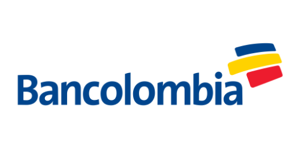
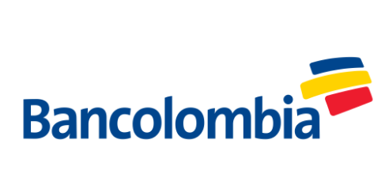

Ingreso Solidario
Debido a la situación generada por el COVID-19,
el gobierno nacional
aportará a las familias más afectadas
y que no pertenezcan a ningún programa social,
un subsidio
por $160.000
¿Qué es el Ingreso Solidario?
Es un esquema mediante se entrega una
transferencia monetario en
favor de los hogares
en situación de pobreza y vulnerabilidad que
no sean beneficiarios de programas soaciales del Estado.
Los hogares en condición de pobreza
y vulnerabilidad, afectados en
sus
ingresos como consecuencia de la pandemia del coronavirus,
que no hagan parte de los porgramas sociales
"Familias en
Acción", "Colombia Mayor",
"Jóvenes en Acción" y "Devolución del IVA"
podrán acceder a esta
medida social.

Etapas de Entrega
Etapa 1
Etapa 2
Etapa 3
Desde el 7 de Abril
9 de Abril al 18 de Abril
18 de Abril al 25 de Abril
Bancos Autorizados
 



Preguntas Frecuentes
1
Yo había salido como beneficiario en la primera fase y
ahora no aparezco
en el listado de beneficiarios ¿Es decir, ya no recibiré el beneficio?
Estamos actualizando el listado de beneficiarios que reciben
el giro.
Si encontró su nombre en la primera etapa y está plenamente
identificado, no ha
perdido su beneficio.
2
¿Por qué no aparezco ahora en el listado de ingresosolidario.prosperdidadsolcial.gov.co?
Estamos actualizando el listado de beneficiarios que reciben
el giro.
Si encontró su nombre en la primera etapa y está plenamente
identificado, no ha
perdido su beneficio.
3
¿Qué debo hacer porque me llegó el mensaje de que soy beneficiario y no he recibido el pago?
Si usted fue informado de que es beneficiario del programa
mediante un mensaje de texto
enviado por la entidad financiera en la cual tiene una cuenta o depósito activo,
comuníquese con esa entidad financiera para averiguar cómo acceder a los recursos del Ingreso
Solidario.
Si usted no tiene una cuenta o depósito con el sistema financiero, y es elegido
dentro del programa Ingreso Solidario, pronto recibirá un mensaje con
las instrucciones para hacer la apertura de una cuenta digital.
4
Consulté en la página web y soy beneficiario, pero aún
no me han llamado ni he recibido mensaje de texto ¿Qué debo hacer?
Si usted encontró su nombre y cédula en la base de
beneficiarios y no ha recibido un mensaje de texto, significa que hace parte
de un ciclo posterior de pagos. Durante esta etapa, las entidades financieras se contactarán con
usted
para darle las indicaciones de cómo recibir el giro o hacer la apertura de un depósito
simplificado a través de su celular.
5
¿Qué debemos hacer los que somos beneficiarios, pero no tenemos celular o cambiamos de número?
Prosperidad Social está trabajando con diferentes
organizaciones y
fuentes de datos para ubicarlo y contactarlo.
Lo invitamos a consultar periódicamente la página.
¿Tienes más preguntas?
Por favor no dudes en contactarnos para poderte dar la información que necesites